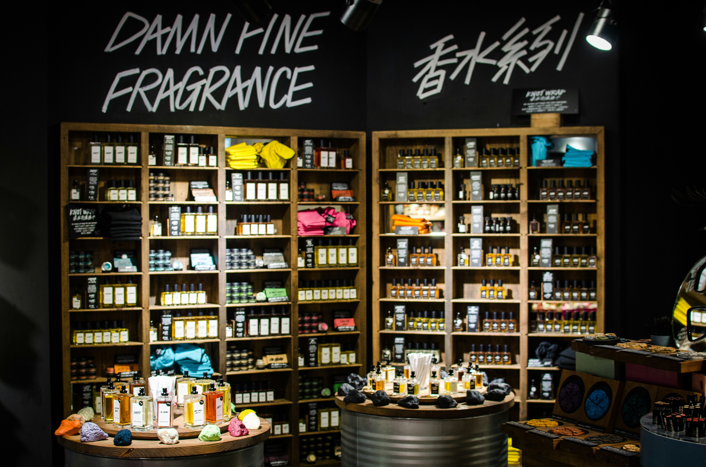

「ずっと前に買ったお気に入りの香水、久しぶりにつけたらなんだか香りが違う…」
「ドレッサーに飾っていたボトル、色が茶色くなっている気がする」
香水は目に見えない「芸術」ですが、その液体は繊細な化学物質の集合体です。食品のように賞味期限が明記されていないことが多いため見落としがちですが、香水にも確実に「寿命」が存在します。
この記事では、香りのプロフェッショナルが実践する「劣化させないための正しい保管ルール」と、万が一古くなってしまった香水の「捨てずに楽しむリサイクル活用術」まで、徹底的に深掘りして解説します。
1. 法律上の「使用期限」と、リアルな「寿命」
まず、基本的なルールを押さえましょう。日本の薬機法（旧薬事法）では、「製造後3年以内で変質するおそれのある化粧品」にのみ使用期限の表示を義務付けています。
裏を返せば、「使用期限が書かれていない香水は、未開封なら3年は品質が保証されている」ということです。しかし、これはあくまで「未開封」の話。一度でもスプレーをプッシュして空気に触れさせれば、カウントダウンは始まります。
PERFUME LIFESPAN
- 未開封の場合： 製造から約3年（環境が良ければ5〜10年持つことも）
- 開封済みの場合： 開封から約1年（柑橘系は半年、重厚なウッディ系は2〜3年）
特にシトラス（柑橘系）やナチュラルな香料を多く含む香水は酸化しやすく、逆にオリエンタル系やウッディ系の香水は、時間の経過とともに熟成（マリッジ）が進み、まろやかになることもあります。これを「ヴィンテージ香水」として楽しむ愛好家もいますが、これはあくまで適切な管理下での話です。
2. これって劣化？危険信号の3大サイン
「1年以上経ってしまったけど、まだ使える？」と迷ったときは、自分の目と鼻でチェックしましょう。以下の3つのサインが出ていたら、肌への直接使用は避けるべきです。
① 色の変化（褐変）
最もわかりやすいサインです。透明だった液体が黄色っぽくなったり、薄い黄色が濃い琥珀色に変色したりしている場合は、酸化が進んでいます。特にバニラ香料が含まれていると茶色くなりやすいですが、これは必ずしも香りの劣化を意味しません。しかし、明らかに濁っている場合は要注意です。
② 香りのトップノートの崩壊
香水をつけて最初の5分〜10分の香りを確認してください。以下のような匂いがしたらアウトです。
- 強いアルコール臭（ツンとする刺激臭）
- 古い油のような匂い（クレヨンのような匂い）
- 酸っぱい酢のような匂い
香水は揮発性の高い「トップノート」から順に飛んでいきます。ここが崩れていると、本来の美しい香りの構成は楽しめません。
③ 澱（おり）や浮遊物
ボトルの底を見て、白いモヤのようなものや、結晶のような沈殿物が溜まっている場合、成分が分離・変質しています。スプレーノズルの詰まりの原因にもなります。
3. 香水を長持ちさせる「正しい保管場所」決定版
香水の天敵は「光（紫外線）」「熱」「空気（酸素）」の3つです。これらを避けることが、香りを守る鉄則です。
【BEST】理想の保管場所 👑
- ワインセラー（温度管理付き）： 15度〜20度前後で一定に保たれる環境は、香水にとっても天国です。コレクターの多くが小型のワインセラーを香水専用にしています。
- クローゼットや引き出しの中： 最も現実的で効果的な場所です。光を遮断し、部屋の温度変化の影響を受けにくいからです。
- 購入時の箱の中： 箱はただのパッケージではありません。ボトルを光と衝撃から守るための「鎧」です。使うたびに出し入れするのは面倒かもしれませんが、これが最強の保管方法です。
【WORST】絶対に避けるべき場所 ❌
- 窓際・ドレッサーの上： インスタ映えする場所ですが、香水にとっては「処刑台」です。紫外線はガラスを透過し、中の液体を急速に分解します。
- バスルーム・洗面所： お風呂上がりに付けたい気持ちはわかりますが、急激な湿気と温度変化（ヒートショック）は香水の劣化を早めます。
- 冷蔵庫（一般家庭用）： よくある誤解ですが、普通の冷蔵庫は冷えすぎます（約3〜6度）。出し入れする際の温度差でボトル内に結露が発生し、カビや劣化の原因になります。野菜室ならまだマシですが、食品への匂い移りも懸念されます。
4. 古くなった香水の「捨てない」活用法
残念ながら肌につけるには劣化してしまった香水。でも、そのまま捨てるのはもったいないですよね。香りが完全に腐敗（異臭）していない限り、以下のような使い道があります。
ルームフレグランス（リードディフューザー）として
ボトルのキャップを外し、無水エタノールで少し薄めてから、竹串やラタンスティックを挿せば、即席のリードディフューザーになります。玄関やトイレなど、肌に触れない場所で楽しみましょう。
サシェ（香り袋）や手紙に
コットンや厚紙に香水を吹きかけ、乾かしてからクローゼットに入れたり、手紙に添えたりします。直接吹きかけるとシミになるので注意してください。
最後の手段：正しい捨て方
どうしても処分する場合は、中身をトイレや流しに流すのはNGです（水質汚染や配管の匂い移りの原因になります）。
- 新聞紙や不要な布をビニール袋に入れる。
- そこに香水を染み込ませる（風通しの良い屋外で行うこと）。
- ビニールの口をしっかり縛り、「燃えるゴミ」として出す。
- ボトルはガラス、スプレー部分はプラスチック/金属など、自治体の分別に従って捨てる。
※スプレー部分（カシメ）が外れないタイプは、無理に開けようとせず、そのまま不燃ゴミとして出せる地域が多いですが、必ず自治体のルールを確認してください。
5. プロが答える！香水保管のQ&A
Q. 夏場、部屋が暑くなるのですが冷蔵庫に入れてもいいですか？
A. 基本的にはおすすめしません。冷蔵庫（約3〜5℃）は冷えすぎてしまい、出し入れの温度差で結露が生じ、香水の成分が変質するリスクが高まります。どうしても暑い場合は、冷蔵庫の「野菜室」（約6〜8℃）に入れ、使うときだけ取り出してすぐに戻すように徹底してください。
Q. 香水の色が少し黄色くなりましたが、香りは変わっていない気がします。使えますか？
A. 香りに違和感がなければ使用しても問題ありません。特に天然香料（バニラやジャスミンなど）を多く含む香水は、酸化により色が濃くなることがよくあります。肌につけるのが不安な場合は、ハンカチや服の裏地などでパッチテストをするか、ルームフレグランスとして楽しむのが無難です。
Q. アトマイザーに移し替えた香水の期限は？
A. 移し替える際に空気に触れるため、元のボトルより劣化は早まります。目安としては「1ヶ月〜3ヶ月」で使い切るのがベストです。COLLEGRANCEのような1.5mlサイズなら、新鮮なうちに使い切れるのでおすすめです。
6. まとめ：コレクションの最適解は「サイズ選び」
香水のボトルは美しいので、つい100mlなどの大容量を買いたくなります。しかし、毎日違う香りを纏いたい現代人にとって、100mlを1年で使い切るのは至難の業です（100mlは約1000〜1500プッシュ、毎日3プッシュしても1年以上かかります）。
劣化におびえながら使うよりも、「1.5ml〜5mlのお試しサイズ（アトマイザー）」や「30ml以下のミニボトル」を選ぶのが、最も賢い香水の楽しみ方と言えるでしょう。
COLLEGRANCEでは、すべての香水を1.5mlサイズからお試しいただけます。常にフレッシュな香りを、必要な分だけ手に入れる。それが、香りと長く付き合うための新しいスタンダードです。